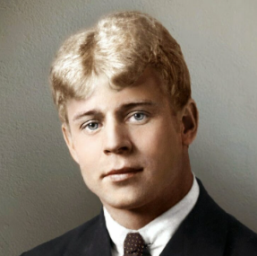

Вы помните,
Вы всё, конечно, помните,
Как я стоял,
Приблизившись к стене,
Взволнованно ходили вы по комнате
И что-то резкое
В лицо бросали мне
Вы говорили:
Нам пора расстаться,
Что вас измучила
Моя шальная жизнь,
Что вам пора за дело приниматься,
А мой удел —
Катиться дальше, вниз.
Любимая!
Меня вы не любили.
Не знали вы, что в сонмище людском
Я был как лошадь, загнанная в мыле,
Пришпоренная смелым ездоком.
Не знали вы,
Что я в сплошном дыму,
В развороченном бурей быте
С того и мучаюсь, что не пойму —
Куда несет нас рок событий.
Лицом к лицу
Лица не увидать.
Большое видится на расстоянье.
Когда кипит морская гладь —
Корабль в плачевном состоянье.
Земля — корабль!
Но кто-то вдруг
За новой жизнью, новой славой
В прямую гущу бурь и вьюг
Ее направил величаво.
Ну кто ж из нас на палубе большой
Не падал, не блевал и не ругался?
Их мало, с опытной душой,
Кто крепким в качке оставался.
Тогда и я,
Под дикий шум,
Но зрело знающий работу,
Спустился в корабельный трюм,
Чтоб не смотреть людскую рвоту.
Тот трюм был —
Русским кабаком.
И я склонился над стаканом,
Чтоб, не страдая ни о ком,
Себя сгубить
В угаре пьяном.
Любимая!
Я мучил вас,
У вас была тоска
В глазах усталых:
Что я пред вами напоказ
Себя растрачивал в скандалах.
Но вы не знали,
Что в сплошном дыму,
В развороченном бурей быте
С того и мучаюсь,
Что не пойму,
Куда несет нас рок событий…
Теперь года прошли.
Я в возрасте ином.
И чувствую и мыслю по-иному.
И говорю за праздничным вином:
Хвала и слава рулевому!
Сегодня я
В ударе нежных чувств.
Я вспомнил вашу грустную усталость.
И вот теперь
Я сообщить вам мчусь,
Каков я был,
И что со мною сталось!
Любимая!
Сказать приятно мне:
Я избежал паденья с кручи.
Теперь в Советской стороне
Я самый яростный попутчик.
Я стал не тем,
Кем был тогда.
Не мучил бы я вас,
Как это было раньше.
За знамя вольности
И светлого труда
Готов идти хоть до Ла-Манша.
Простите мне…
Я знаю: вы не та —
Живете вы
С серьезным, умным мужем;
Что не нужна вам наша маета,
И сам я вам
Ни капельки не нужен.
Живите так,
Как вас ведет звезда,
Под кущей обновленной сени.
С приветствием,
Вас помнящий всегда
Знакомый ваш
Сергей Есенин.

Сергей Есенин
1924 г.